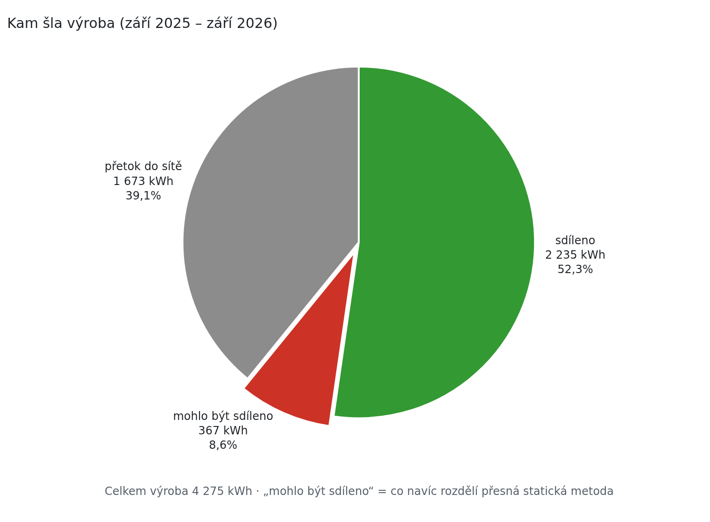
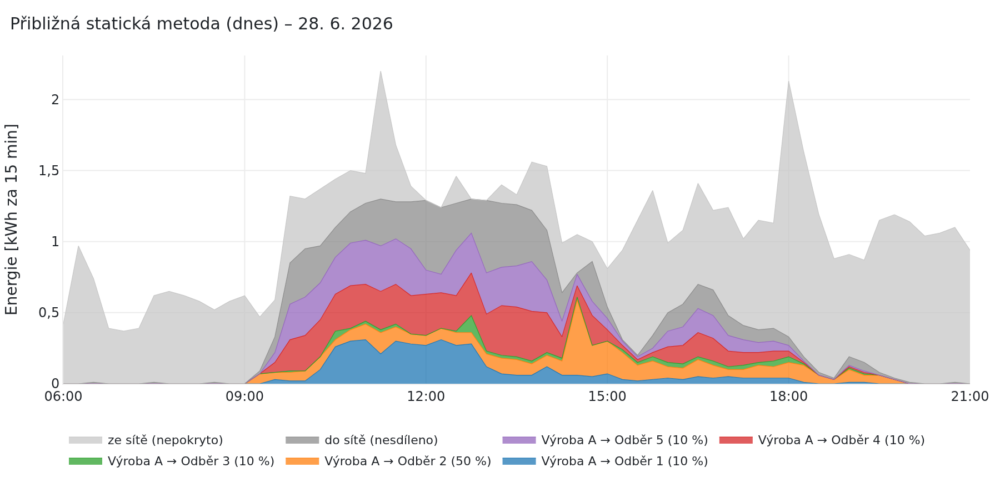
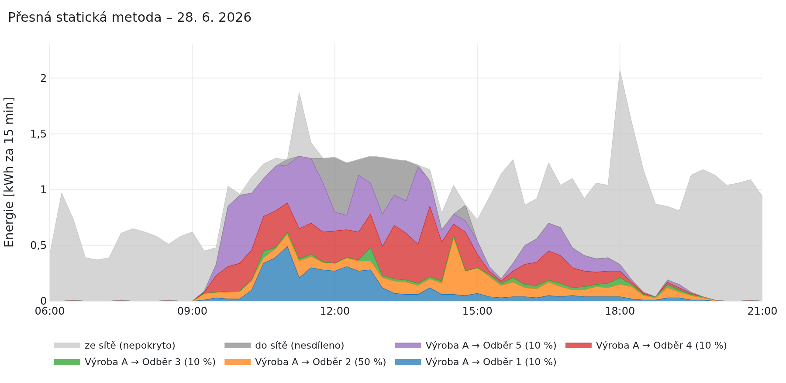

Sdílení elektřiny · UCEEB ČVUT v Praze
Sdílení elektřiny do poslední kilowatthodiny
Sdílení elektřiny se v Česku rychle rozběhlo a zapojily se do něj desítky tisíc skupin. Dnešní výpočet, kolik z výroby připadne kterému členovi, je ale jen přibližný. Po jeho posledním kole může zbýt elektřina, kterou by členové ještě spotřebovali, a ta odejde do sítě. V článku ukážeme, jak by vypadal výpočet přesný. Klíče, smlouvy i zúčtování přitom zůstanou stejné.
Jak sdílení funguje
Skupina sdílení spojuje výrobny a odběrná místa svých členů. Výrobnou bývá nejčastěji fotovoltaika na střeše. Elektřina přitom neteče zvláštním drátem, sdílí se jen účetně. Elektroenergetické datové centrum (EDC) vezme naměřenou výrobu a spotřebu v každé čtvrthodině. Pak spočítá, kolik z výroby připadne kterému členovi. Za tuto elektřinu člen neplatí dodavateli cenu silové elektřiny. Distribuční poplatky ale platí dál [1]. Pravidla výpočtu stanoví Energetický regulační úřad (ERÚ) ve vyhlášce č. 408/2015 Sb., o Pravidlech trhu s elektřinou. Výpočet sdílení popisuje její příloha č. 25 [2].
Sdílet lze od srpna 2024 a zájem je velký. V srpnu 2026 evidovalo EDC téměř 30 000 skupin sdílení. Patří mezi ně 1 171 bytových domů a 228 energetických společenství [3].
- Odběrné místo
- Místo s elektroměrem, například byt, dům nebo provozovna. EDC ho označuje kódem EANo. Výrobna má vlastní kód EANd.
- Alokační klíč
- Dohodnutý podíl člena na výrobě, například 50 %. Může odpovídat třeba tomu, kolik člen do výrobny investoval.
- Čtvrthodina
- Sdílet lze jen elektřinu vyrobenou a spotřebovanou ve stejné čtvrthodině. Výpočet proto proběhne pro každou čtvrthodinu zvlášť, 96krát denně.
- EDC
- Elektroenergetické datové centrum. Eviduje skupiny sdílení. Z naměřených dat vyhodnocuje, kolik elektřiny si členové nasdíleli.
Dnešní výpočet: kola a zbytek, který odejde do sítě
Dnes se používá statická metoda. Výroba se dělí podle pevných klíčů a výpočet běží v kolech. V každém kole dostane člen svůj podíl z výroby, která zbývá k rozdělení. Nedostane ale víc, než ještě potřebuje. Co zbude, se rozdělí v dalším kole. Výsledky se zaokrouhlují dolů na setiny kWh. Postup je názorný a dá se dobře popsat ve vyhlášce.
Ukážeme si to na malém příkladu, který nás bude provázet celým článkem. Výrobna v jedné čtvrthodině vyrobí 12 kWh. Dana má klíč 50 % a potřebuje 4 kWh. Emil má klíč 30 % a potřebuje 5 kWh. Filip má klíč 20 % a potřebuje 6 kWh. Průběh výpočtu po kolech ukazuje tabulka 1.
| Kolo | K rozdělení | Dana (50 %) | Emil (30 %) | Filip (20 %) | Zbývá |
|---|---|---|---|---|---|
| 1 | 12,00 | 4,00 | 3,60 | 2,40 | 2,00 |
| 2 | 2,00 | – | 0,60 | 0,40 | 1,00 |
| 3 | 1,00 | – | 0,30 | 0,20 | 0,50 |
| 4 | 0,50 | – | 0,15 | 0,10 | 0,25 |
| 5 | 0,25 | – | 0,07 | 0,05 | 0,13 → síť |
| Celkem | 4,00 | 4,72 | 3,15 |
Tabulka 1: Statická metoda v pěti kolech (kWh). Dana dostane vše hned v prvním kole. Emil a Filip dostávají v dalších kolech zbytek. Ten se v každém kole zmenší na polovinu.
Každé kolo rozdělí jen část zbytku. Celý zbytek by rozdělilo až nekonečně mnoho kol. Od srpna 2026 platí novela této vyhlášky: pět kol se počítá u skupin až se 100 odběrnými a výrobními místy a u větších skupin proběhne jedno kolo [2, 4]. Jak rychle zbytek mizí, záleží na klíčích členů, kteří ještě něco potřebují. V příkladu mají Emil a Filip dohromady 50 %, a zbytek se proto v každém kole půlí. Kdyby měli dohromady jen 10 %, zůstaly by po pěti kolech nerozděleny dvě třetiny zbytku z prvního kola.
Dnešní výpočet tedy dává přibližný výsledek, který je s každým kolem přesnější. Odtud název přibližná statická metoda. Nabízí se otázka, kam by výpočet došel, kdyby kol bylo nekonečně mnoho. Právě na to odpovídá přesná statická metoda.
Přesná statická metoda: jedna hladina místo mnoha kol
Přesná statická metoda dělí výrobu podle stejných klíčů jako dnešní výpočet, jen rovnou do konce. Kola nahradí jediným číslem, které se spočítá vzorcem.
Princip: spojené nádoby
Představme si každého člena jako nádobu. Šířka nádoby odpovídá jeho klíči, objem jeho spotřebě. Výrobu nalijeme do všech nádob najednou. Nádoby jsou spojené, a tak hladina stoupá všude stejně. Plná nádoba už nic nepřijme a voda stoupá dál v ostatních. Každý člen nakonec dostane tolik, kolik vody je v jeho nádobě:
Písmeno H označuje společnou hladinu. Udává, kolik by dostal člen s klíčem 100 %, a proto ji měříme v kWh. Množství vody v nádobě je šířka × výška. U nenaplněné nádoby je to klíč × H, a to je nasdílená energie. V příkladu vyjde H = 16 kWh. Dana by při ní mohla dostat až 0,5 × 16 = 8 kWh. Potřebuje ale jen 4 kWh, a tak dostane 4 kWh. Emil dostane 0,3 × 16 = 4,8 kWh a Filip 0,2 × 16 = 3,2 kWh. Celou situaci ukazuje obr. 1.
Jak se hladina spočítá
Hladinu není třeba hledat zkoušením. Členy seřadíme podle toho, jak brzy se jejich nádoba naplní. Pak je procházíme jednoho po druhém. U každého spočítáme, jaká by byla hladina, kdyby se všichni před ním naplnili. Stačí vydělit zbývající výrobu součtem klíčů zbývajících členů. Správná hladina je nejvyšší z takto spočtených hodnot. Postup pro náš příklad ukazuje tabulka 2. Přesný zápis vzorcem je v rámečku na konci této části.
| Pořadí | Člen | Naplní se při (kWh) | Výpočet | Hladina (kWh) |
|---|---|---|---|---|
| 1 | Dana | 4 / 0,5 = 8 | 12 / (0,5 + 0,3 + 0,2) | 12 |
| 2 | Emil | 5 / 0,3 = 16,7 | (12 − 4) / (0,3 + 0,2) | 16 ← max |
| 3 | Filip | 6 / 0,2 = 30 | (12 − 4 − 5) / 0,2 | 15 |
Tabulka 2: Výpočet hladiny pro příklad. Výpočet může skončit u prvního člena, který se nenaplní. Tady je to Emil. Jeho nádoba by se naplnila až při hladině 16,7 kWh. Hladina se udává v kWh na 100 % klíče.
Klíče se berou jako poměry. Mohou proto dávat dohromady i méně než 100 %. Nerozdělený podíl se pak přerozdělí, stejně jako v dalších kolech dnešního výpočtu. Skupina, která chce část výroby záměrně prodávat, ji může před výpočtem odečíst jako pevnou rezervu.
Stejná metoda, jen dopočítaná
Přesná statická metoda nezavádí nové pravidlo. Je to dnešní statická metoda, jen dopočítaná do konce. V teorii spravedlivého dělení jde o dobře prozkoumané vážené pravidlo rovných dílů [5, 6] (více v rámečku níže). Každé kolo si můžeme představit jako další dávku vody. Členové s nenaplněnou nádobou přibírají v poměru svých klíčů. Po každém kole je proto v těchto nádobách stejná hladina. Ta s každým kolem roste (obr. 2). Nad H ale vystoupat nemůže, protože by se muselo rozdělit víc, než se vyrobilo.
Přesná metoda tedy dává výsledek, ke kterému dnešní výpočet s každým kolem směřuje. Nikdo proto nepřijde zkrátka. Výjimkou jsou jen čtvrthodiny s velmi malou výrobou. V nich může zaokrouhlení přesunout mezi členy pár setin kWh.
Co přesný výpočet přinese
- Členové si rozdělí vše, co mohou spotřebovat, a to se stejnými klíči.
- Výpočet nezávisí na počtu kol ani na velikosti skupiny. Stejně přesný je pro rodinný dům i pro velké společenství.
- Je rychlý. Přepočet celého roku ukázkové skupiny (35 040 čtvrthodin) trval 0,18 s. Srovnání s dnešním výpočtem pro různě velké skupiny ukazuje obr. 3 v rámečku níže.
- Je snadno ověřitelný. Stačí znát klíč a hladinu H. Každý si pak svůj podíl spočítá sám jako menší z hodnot spotřeba a klíč × H.
Co přesný výpočet změní u skutečné skupiny
Z portálu EDC si lze stáhnout report sdílení se čtvrthodinovými daty. Každá skupina si tak může prohlédnout, jak u ní sdílení funguje. Vzali jsme report jedné skupiny. Má fotovoltaiku 11,44 kWp s baterií 11,6 kWh a pět odběrných míst. Klíče jsou 50 % a čtyřikrát 10 %. Za rok od září 2025 do září 2026 výrobna vyrobila 4 275 kWh. Členové spotřebovali 36 854 kWh.
Report jsme zpracovali volně dostupnou aplikací edc-report, která běží na adrese edc-report.uceeb.cvut.cz [7]. Aplikace dnešní výpočet napodobuje. V 99,2 % čtvrthodin dojde k přesně stejnému výsledku jako EDC. Jejím přepočtům proto můžeme věřit.

Kam šla výroba za celý rok, ukazuje obr. 4. Z výroby se nasdílelo 2 235 kWh (52,3 %). Přesný výpočet by se stejnými klíči rozdělil dalších 367 kWh, tedy 8,6 % výroby. Zbylých 1 673 kWh (39,1 %) by ve skupině nikdo nespotřeboval. Tento přetok nerozdělí žádná metoda a odchází do sítě. Přesný výpočet by pomohl v 80 % čtvrthodin, kdy výrobna vyráběla. Za celý rok si polepšil každý z pěti členů, a to o 30 až 142 kWh. Jak to vypadá během jednoho dne, ukazuje obr. 5.


Jde o jednu skupinu, jiné skupiny budou mít jiná čísla. Rozdíl roste s počtem členů a s menšími klíči. Týká se proto hlavně bytových domů a energetických společenství. Přínos za celou republiku by šlo spočítat z dat EDC.
Každá skupina si může spočítat vlastní čísla. Stačí stáhnout report sdílení z portálu EDC a nahrát ho do aplikace. Aplikace odhadne klíče, přepočítá celé období přesnou statickou metodou a ukáže obě metody vedle sebe. Nahraný soubor se nikam neukládá.
Vyzkoušejte to na své skupině. edc-report.uceeb.cvut.cz
Skupiny s více výrobnami: režim bazén
Když má skupina více výroben, nastavuje se klíč pro každou dvojici výrobna–odběrné místo. Odběrné místo může čerpat až z pěti výroben a záleží přitom i na jejich pořadí. Takové zadání je velmi pružné a umožní téměř libovolné uspořádání. Pro běžnou skupinu je ale nastavení pracné a členové mu těžko rozumějí. Navíc se z dělení jedné hromádky stává síťová úloha, protože rozhodnutí na jedné vazbě mění možnosti na ostatních. Ukazuje to jednoduchý příklad na obr. 6.
Statická metoda dá O1 10 kWh, z toho 5 z A a 5 z B. O2 dostane 5 kWh z A. Nasdílí se 15 kWh a 5 kWh z výrobny B zůstane nevyužito. Přitom by šlo nasdílet všech 20 kWh: výrobna A by poslala vše do O2 a výrobna B do O1. Pravidlo, které dělí každou výrobnu zvlášť, takové řešení nenajde. Nejde o slabinu konkrétní metody, ale o vlastnost úlohy. Stejně by dopadla i dynamická nebo hybridní metoda, pokud by dělila každou výrobnu zvlášť.
Optimalizace je pro většinu skupin zbytečně složitá
Pro obecné vazby je správným nástrojem optimalizace, například úloha maximálního toku. Počítač ji zvládne. Nemá ale jednoduchý vzorec a člen skupiny si výsledek těžko ověří. Otevírá navíc další otázku. Optimalizace zajistí, že se nasdílí co nejvíc. Často ale existuje víc rozdělení, která nasdílí stejné množství, a liší se tím, kdo kolik dostane. Mezi nimi musí rozhodnout další pravidlo, a jsme zpátky u otázky spravedlnosti.
Většina skupin s více výrobnami ale nic tak složitého nepotřebuje. Členové chtějí prostě sdílet všichni se všemi. Pro ně je optimalizace zbytečně těžký nástroj. Má smysl jen tam, kde smí výrobna sdílet jen s některými členy.
Režim bazén
Když sdílí všichni se všemi, můžeme výrobu všech výroben sesypat na jednu hromádku. Říkáme jí bazén. Každý člen má jeden klíč pro celou skupinu. Souhrnná výroba se rozdělí přesnou statickou metodou. Výsledek se pak vrátí na jednotlivé výrobny v poměru jejich výroby. Každá výrobna tak v dané čtvrthodině sdílí stejný podíl své výroby. Žádná není zvýhodněna pořadím. Příklad ukazuje obr. 7 a tabulka 3.
| O1 | O2 | Celkem | |
|---|---|---|---|
| Z výrobny A (62,5 %) | 1,25 | 8,75 | 10,00 |
| Z výrobny B (37,5 %) | 0,75 | 5,25 | 6,00 |
| Celkem | 2,00 | 14,00 | 16,00 |
Tabulka 3: Rozdělení bazénu zpět na výrobny (kWh).
Bazén by byl nový, volitelný režim. Dnešní zadání by nenahradil, stál by vedle něj. Skupiny se zvláštními vazbami mohou dál používat klíče po dvojicích. Ostatním by bazén přinesl jednodušší nastavení s jedním klíčem na člena. A rozdělilo by se vše, co lze spotřebovat.
Co dál: dvě úpravy výpočtu
Sdílení elektřiny funguje v Česku od srpna 2024. Za krátkou dobu se ušel velký kus cesty. Vznikl systém, který každou čtvrthodinu rozděluje výrobu desítek tisíc skupin. Pravidla se navíc průběžně vylepšují. EDC od srpna 2026 postupně přechází z počátečního, provizorního režimu do plného provozu, který má být dokončen nejpozději do konce roku 2027 [9]. Je to dobrá příležitost výpočet ještě zpřesnit. Náš návrh navazuje na dosavadní práci dvěma malými úpravami popisu výpočtu ve vyhlášce:
- Přesná statická metoda pro skupiny s jednou výrobnou. Dnešní výpočet se dotáhne do konce jedním vzorcem.
- Režim bazén pro skupiny s více výrobnami, kde sdílí všichni se všemi. Výroba se sečte a rozdělí stejným vzorcem.
Obě úpravy zachovávají klíče i smlouvy. Nemění ani zúčtování. Výsledek výpočtu má stejnou podobu jako dnes: objem sdílené elektřiny pro každou dvojici výrobna–odběrné místo v každé čtvrthodině. Měsíční objem je součtem čtvrthodinových. U jedné výrobny se mění jen hodnoty, které budou přesnější. U bazénu je navíc jiné pravidlo, jak se objem odběrného místa rozdělí mezi výrobny. Ceny a finanční vypořádání mezi členy se řídí jejich smlouvami a výpočet do nich nezasahuje. Zpřesní se jen spočítané objemy sdílené elektřiny.
Úpravy nezávisejí na tom, zda a kdy přibudou další metody sdílení. Návrh jsme v UCEEB připravili jako podklad pro diskusi s ERÚ a EDC. Referenční implementace je volně dostupná [7]. Volně dostupná je i aplikace edc-report.uceeb.cvut.cz. Každá skupina v ní uvidí, jak by přesná statická metoda rozdělila její elektřinu.
Zdroje
- L. Šimšová: Jak funguje komunitní sdílení elektřiny a jaké změny lze očekávat od 1. srpna letošního roku. TZB-info, 29. 7. 2026, energetika.tzb-info.cz.
- Vyhláška č. 408/2015 Sb., o Pravidlech trhu s elektřinou, ve znění pozdějších předpisů, zejména vyhlášky č. 132/2026 Sb.
- Rozvoj EDC pokračuje: nový web usnadní přístup ke službám moderní energetiky. Feedit, 19. 8. 2026 (tisková zpráva EDC), feedit.cz.
- ERÚ usnadnil sdílení elektřiny. Další změny ale budou potřeba. TZB-info, 13. 7. 2026, energetika.tzb-info.cz.
- B. O'Neill: A problem of rights arbitration from the Talmud. Mathematical Social Sciences 2(4), 1982.
- W. Thomson: Axiomatic and game-theoretic analysis of bankruptcy and taxation problems. Mathematical Social Sciences 45(3), 2003. W. Thomson: How to Divide When There Isn't Enough. Cambridge University Press, 2019.
- P. Otta: edc-report. Aplikace pro rozbor reportu sdílení a referenční implementace přesné statické metody, aplikace edc-report.uceeb.cvut.cz, zdrojový kód github.com/ottapav/edc-report.
- Komunitní energetika vyhlíží dynamické sdílení a chystá se na chytré řízení toků energie. Hospodářské noviny, 19. 5. 2026, hn.cz.
- Elektroenergetické datové centrum vstupuje do plného provozu. Co to přinese domácnostem? Naše střecha, 2. 8. 2026, nasestrecha.cz.